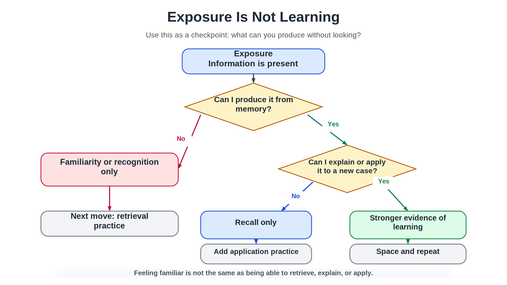
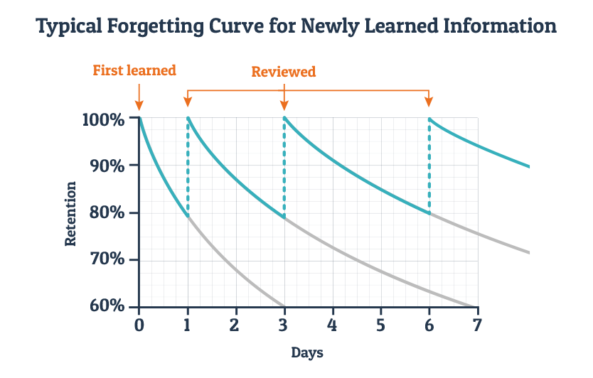
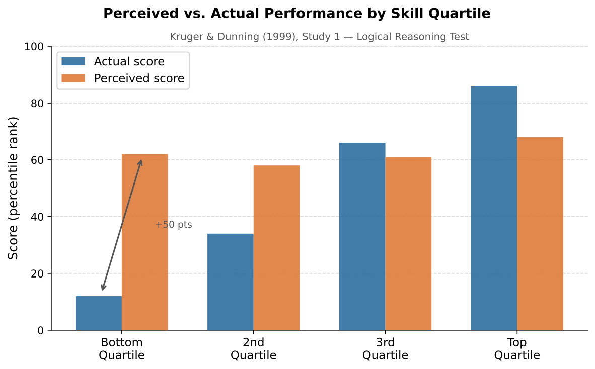
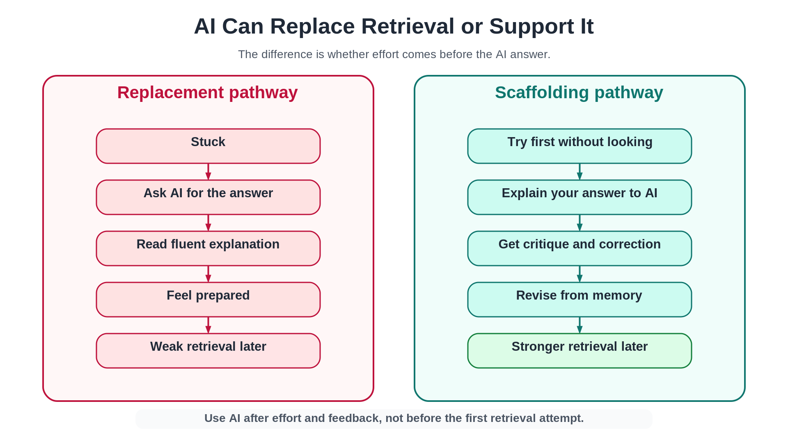

How to Actually Learn This Stuff
You studied. You spent two hours with the textbook open, highlighted a dozen passages, read through your notes. At some point the material started to feel familiar. By the end, you felt ready.
Then the exam asked you to explain a concept in your own words, or apply it to a new example, and the feeling of readiness turned out to be hollow.
Here is the uncomfortable truth: many of the study activities that feel most productive are also the least effective for durable learning. Rereading can feel productive while leaving the mind passive. Highlighting can feel thorough without building retrievable knowledge. Passive review creates the feeling of knowing without changing what you can actually produce. These are not the worst approaches if they accompany active methods — but when they are the main event, they tend to produce familiarity rather than learning.
Dunlosky and colleagues (2013) reviewed the evidence on ten common learning techniques and found that practice testing and distributed practice had high utility, while rereading and highlighting had low utility when used as primary study strategies. This prologue is about why that pattern exists — and what to do instead.
This is not a generic study-skills handout. It is a chapter about how the mind works. Once you understand attention, working memory, encoding, retrieval, sleep, and reinforcement, many ordinary student experiences start to make psychological sense. And once those concepts make sense, you have a much better shot at using them on yourself.
This prologue is not extra background. It is the operating manual for the course. Each section explains one psychological mechanism that will reappear later in the textbook and one study behavior you can use immediately. Do not try to memorize every term on the first pass. Instead, ask after each section: What does this explain about how I study, and what should I do differently before the next quiz?
Read this before you start Chapter 1. The rest of the book was designed with these principles built in.
Learning Objectives
- Distinguish exposure from learning and explain why familiarity after rereading is unreliable.
- Explain how attention and working memory create the conditions for encoding.
- Describe why deep processing produces more durable memories than shallow processing.
- Explain the testing effect and its implications for study practice.
- Describe why distributed practice outperforms massed practice for long-term retention.
- Use operant conditioning to explain procrastination and phone-checking during study sessions.
- Define metacognition and explain what Kruger & Dunning (1999) actually found.
- Evaluate whether a given use of AI supports learning or replaces the cognitive work that learning requires.
Opening Case: Three Students
Students often say, "I studied, but I still did badly on the exam." Sometimes that is exactly what happened. The student spent time. Effort was made. The material was encountered again and again.
Psychology forces a more precise question: did studying produce learning?
Those are not the same thing. Learning is a relatively lasting change in knowledge or behavior produced by experience. Attention determines what information enters conscious processing. Memory is one way that learning persists. Sleep helps stabilize some of what was learned. Reinforcement shapes which habits we repeat.
Three students illustrate the difference.
Emma: The Familiarity Trap. Emma opens the textbook the night before the quiz. She reads carefully, highlights many sentences, and rereads the slides. The material starts to look familiar. She recognizes terms she saw in lecture. By midnight she feels reassured. "I know this," she thinks. The next morning, the quiz asks her to explain the difference between recognition and recall. Emma can picture the slide. She remembers seeing both words. But she cannot clearly explain the difference without looking. Emma studied. What she practiced was familiarity, not retrieval.
Luis: The Retrieval System. Luis studies differently. Several days before the quiz, he looks over the learning objectives and tries to answer them without notes. This feels uncomfortable. He gets several answers partly wrong. He checks the textbook, corrects his explanations, and tries again later. He studies in short sessions spread across the week. He asks: "Could I give a new example of this?" The night before the quiz, he reviews what he missed and goes to sleep. Luis's studying feels harder than Emma's because he keeps exposing what he does not know. That is why it works.
Nia: The AI Fluency Trap. Nia asks an AI to summarize the chapter. The summary is clear and easier to read than the textbook. Nia reads it twice and feels prepared. On the quiz, she recognizes many terms, but when asked to apply them she struggles. The explanation made sense when AI produced it. But she had not practiced producing the explanation herself. Nia's problem is not that she used AI — it can be a powerful learning tool — but that she used it in a way that replaced retrieval instead of strengthening it.
Exposure means the information was present. Learning means the information changed what you can retrieve, explain, apply, or judge later.
The Learning System
| Process | What it does | Study implication |
|---|---|---|
| Attention | Selects information for conscious processing | You cannot deeply process everything at once |
| Working memory | Holds and organizes information actively | Overload weakens understanding |
| Encoding | Builds memory traces | Meaning and organization matter more than time spent |
| Retrieval | Reconstructs information from memory | Trying to remember strengthens future access |
| Spacing | Spreads practice across time | Durable learning beats temporary fluency |
| Sleep | Supports attention and consolidation | Sleep is part of studying, not time stolen from it |
| Reinforcement | Shapes repeated behavior | Bad study habits survive because they feel good now |
| Metacognition | Monitors what you know and don't know | Confidence after rereading is a poor guide to actual recall |
Study Method Diagnostic
Use this table to evaluate any study behavior honestly.
| What you did | What it mostly trains | Better next step |
|---|---|---|
| Reread notes or textbook | Familiarity with surface features | Close notes and retrieve from memory |
| Highlighted text | Visual attention, pattern recognition | Explain the highlighted idea in your own words |
| Watched AI explain it | Comprehension fluency | Explain it back without looking |
| Reviewed everything in one session | Short-term performance | Space retrieval across two or three sessions |
| Got the right answer on a multiple-choice question | Recognition | Write the answer from memory, then apply it to a new case |
Section 1: Attention Is the Gateway
Your mind cannot fully process everything available to it. This is not a flaw — it is the evolved design of a system built to select what matters from a constantly overwhelming sensory world. Selective attention is your ability to focus conscious processing on one stimulus or task while filtering out others. It is what lets you follow a lecture while ignoring hallway noise, or read a paragraph while someone nearby is talking.
But selective attention has a cost: when you focus on one thing, you become less aware of others. Psychologists call the failure to notice unexpected stimuli inattentional blindness. Students who read with their phone visible may lose more cognitive capacity than they realize. Ward and colleagues (2017) found that the mere presence of one's own smartphone reduced available cognitive capacity, even when participants were not actively using it. The effect was specific to participants' own phones, and stronger when phone use habits were more ingrained — so the claim is not that all nearby devices impair thinking, but that your own phone specifically draws attentional resources even when silent.
Once information passes through the attentional filter, it depends on working memory — the active mental workspace where you hold and manipulate information. Working memory is what you use when you follow a long argument, compare two theories, or try to keep a definition in mind while reading the example that follows it. It is powerful and limited. Dense, unfamiliar, fast-moving material overloads it. When working memory is overloaded, pieces fall out before you can integrate them.
Emma's mistake is not laziness. Her mistake is confusing being near information with attending to it, and attending to it with encoding it. They are three different things.
Before moving on — what is the difference between selective attention and working memory? What happens to encoding when working memory is overloaded?
Think of a time this semester when you were physically in class but mentally somewhere else. What was competing for your attention? What do you remember from that part of the session?
Connects forward → Ch. 5 States of Consciousness: attention, inattentional blindness; Ch. 7 Memory: the Atkinson-Shiffrin model.
Section 2: Encoding — Depth Matters
Attention gets information into the mental workspace. But attention alone is not enough. You can focus carefully on a page and still remember very little from it, because memory depends not only on whether information was noticed but on how it was processed.
Shallow processing touches the surface of material — noticing a word's appearance, where it appeared on a page, or that it was bolded. Deep processing connects material to meaning: what does this idea mean, how does it connect to other ideas, why does it matter, how does it apply to a situation you have actually been in?
Craik and Lockhart's (1972) levels-of-processing framework showed that deeper encoding at the time of study produces better later recall. Students in a classic demonstration who were asked to rate words as pleasant or unpleasant later recalled them at more than twice the rate of students asked to notice whether words contained a particular letter.
Spending more time with material is not the same as building meaning. You can reread a paragraph for thirty minutes and process it shallowly the entire time. Deep processing is about what you do with information — generating examples, making connections, explaining in your own words — not about how long you sit with it.
Several specific encoding strategies are well supported:
The self-reference effect. Information is more memorable when connected to yourself. "Negative reinforcement" is a dry term. "Negative reinforcement is why I check my phone when I feel anxious about a deadline — checking removes the discomfort" creates a durable hook. Every "Think About It" prompt in this book uses this principle deliberately.
Chunking. Separate pieces of information become easier to hold and remember when organized into a meaningful unit. Classical conditioning abbreviations (US, UR, CS, CR) look like random letters until you understand the system they describe — then they become four parts of one structure.
Dual coding. Information encoded both verbally and visually is recalled better than information encoded in one modality alone (Paivio, 1971). The figures in this book carry content, not decoration.
What is the difference between shallow and deep processing? Give one example of each from your studying last week.
The last time you read a textbook chapter, were you processing meaning or just recognizing words? What would you have had to do differently to process more deeply?
Connects forward → Ch. 7 Memory: levels-of-processing, self-reference effect; Ch. 4 Sensation & Perception: dual coding and visual imagery.
Section 3: Retrieval Is Learning
Most students think testing comes after learning. That is only partly true. Testing can measure learning, but it also creates it. Every time you try to pull information out of memory, you practice the exact cognitive process you will need later. The act of retrieval strengthens access to the memory.
This is called the testing effect, and it is among the most robust findings in the learning-science literature (Roediger & Karpicke, 2006; Dunlosky et al., 2013). Students who read a passage once and then practiced recalling it outperformed students who simply reread the passage three times — on a test administered one week later. The rereaders felt more prepared. The retrievers performed better.
{kind=link}

There are three levels of memory performance worth distinguishing:
| Level | What it requires | Example |
|---|---|---|
| Recognition | Identify correct information when it is present | Pick the correct definition from four choices |
| Recall | Produce information without seeing it | Define "working memory" from memory |
| Application | Use information in a new situation | Diagnose why a student's study method failed |
Recognition is usually easier than recall because the answer is already in front of you. This is why multiple-choice exams can feel easier than they test — you are recognizing, not recalling. Most real-world use of knowledge requires recall or application. "If I recognize the answer, I know the concept" is the familiarity trap in its purest form.
How to use retrieval practice: Before rereading any section, take out a blank page and write everything you remember about the topic. Then check. Mark what you got right, what you got partly right, and what you missed completely. The missed items are not failure — they are information. They tell you exactly where the retrieval pathway is weak.
The Stop & Retrieve prompts throughout this book interrupt passive reading at natural pause points for the same reason. Answer them without looking back. That discomfort is the learning.
What is the testing effect? Why does it matter for how you study? (Answer without looking back.)
Think about the last time you got something wrong on a practice question. Did you treat it as failure, or as a signal about what to review? What would it look like to treat errors as information rather than defeat?
Connects forward → Ch. 7 Memory: retrieval, encoding specificity; Ch. 6 Learning: reinforcement and feedback.
Section 4: Spacing Beats Cramming
{kind=link}

Hermann Ebbinghaus spent years memorizing meaningless syllable strings and testing his own recall at intervals. The result, shown in Figure P.1, was the forgetting curve: memory for new material drops sharply at first, then levels off. Without retrieval, a substantial portion of newly learned material is lost quickly — but each act of retrieval resets the curve at a higher level, and the rate of forgetting slows with each return.
Massed practice (cramming) concentrates study in one session. Distributed practice spreads it across multiple shorter sessions separated by time. Distributed practice nearly always produces better long-term retention, even when total study time is equal (Cepeda et al., 2006). Each return to material after a delay is a retrieval event, and retrieval strengthens memory. Studying across three sessions on three different days gives you three retrieval events; an equivalent three-hour cram session gives you one.
There is also a subtler mechanism. When material is slightly forgotten and then retrieved, the memory is reconstructed rather than simply re-activated — and reconstruction strengthens the memory trace in a way that smooth re-recognition does not. This is why spacing can feel less effective than cramming even when it is more effective: the effort of partial forgetting and re-retrieval is mistaken for inefficiency.
Interleaving extends this principle. Once you know the basics, mix related concepts during practice rather than blocking them by type. Instead of drilling only positive reinforcement examples for ten minutes, mix reinforcement and punishment examples and ask: Is the behavior increasing or decreasing? Is something added or removed? Interleaving is harder because you must categorize each new example. That diagnostic demand is exactly what builds the flexible knowledge that exams and real situations require.
Why does distributed practice typically outperform massed practice? Describe the mechanism, not just the result.
How many days before the next exam are you reading this? Map out what a spaced review schedule would actually look like — specific sessions on specific days — rather than a vague intention to "review later."
Connects forward → Ch. 6 Learning: reinforcement schedules, extinction; Ch. 7 Memory: forgetting curves, storage.
Section 5: Sleep Is Part of Studying
Many students treat sleep as the time left over after studying is finished. Neuroscience says otherwise.
Attention. Sleep loss weakens the attentional capacity that sustained study requires. A sleep-deprived student reading at 1 a.m. has a meaningfully different attentional system than that same student reading after adequate rest. Attention is the gateway to encoding. Degraded attention means degraded encoding, regardless of how long the book stays open.
Consolidation. During waking study, attention and encoding create memory traces. During sleep, the brain continues to process some of what was encoded. The hippocampus and neocortex interact during sleep in ways that support the stabilization of explicit memories — the kinds of facts, concepts, and explanations students need in a psychology course (Diekelmann & Born, 2010). Memory consolidation is the neural process by which recently encoded memories become more stable over time. Material studied before sleep benefits from this window; material crammed until 3 a.m. and then immediately retrieved the next morning does not get the same consolidation opportunity.
Emotional regulation. Sleep deprivation impairs prefrontal regulation of emotional responses in ways that compound the first two problems. When the prefrontal cortex is fatigued, small setbacks feel larger, difficult paragraphs feel impossible, and a challenging concept on a quiz feels catastrophic rather than informative. This is not a character flaw — it is neuroscience.
The all-nighter trade is worse than it appears. You gain hours of exposure while degrading the attention that makes exposure into encoding, the consolidation that makes encoding into lasting memory, and the emotional regulation that makes errors into learning rather than threat. The practical implication: protect sleep as part of the study plan, not as the sacrifice you make when the plan fails.
Name three distinct functions of sleep that matter for learning. Which do you think students underestimate most?
Connects forward → Ch. 5 States of Consciousness: sleep stages, memory consolidation during sleep.
Section 6: Study Habits Are Learned Behaviors
Students often describe study habits as if they were personality traits: "I'm a procrastinator." "I can only work under pressure." "I can't resist my phone." Psychology offers a more precise account: these patterns are learned behaviors shaped by consequences.
Procrastination as negative reinforcement. Consider this sequence: You think about an upcoming exam. The thought produces anxiety. You open a different tab. Anxiety drops. Opening a different tab has been negatively reinforced — a behavior increased because it removed something aversive. Negative reinforcement does not mean punishment. It means a behavior increases because something unpleasant was removed following it. Avoidance works in the short term to reduce anxiety. That is exactly why it persists even when it makes the long-term problem worse. (You will meet this mechanism again in Chapter 13 when we discuss anxiety disorders and the maintenance cycle that keeps them going.)
Phone-checking and variable reinforcement. Phones are difficult to ignore because they are built around a variable reinforcement schedule — sometimes a notification is boring, sometimes funny, sometimes socially important, sometimes absent. Variable reinforcement produces persistent behavior precisely because the next check might be rewarding. The machine that pays out unpredictably is harder to put down than the one that pays out every time. This is not weakness. It is operant conditioning applied at scale.
AI and immediate relief. The same logic applies to how students use AI. You are stuck on a concept. The stuck feeling is unpleasant. You ask AI for the answer. The answer appears immediately. Confusion drops. That relief reinforces asking AI early — before you have made a genuine attempt. Over time, the retrieval event that would have strengthened the memory gets replaced by an outsourcing event that provides relief without building skill.
None of these patterns means you are bad at studying. They mean your habits have been shaped by consequences, as all behaviors are, and that consequences can be redesigned. Reward retrieval, not time spent. Use effort as a signal that learning is happening, not as a signal to stop.
Explain procrastination using the concept of negative reinforcement. Walk through the mechanism step by step — do not just name the concept.
Think of a study habit you have that you know does not work well. Walk it through the reinforcement framework: What behavior? What consequence followed? What made the consequence reinforcing? What would a better reinforcement structure look like?
Connects forward → Ch. 6 Learning: negative reinforcement, variable reinforcement schedules; Ch. 13 Disorders & Therapy: avoidance maintenance of anxiety.
Section 7: Knowing What You Don't Know
{kind=link}

Metacognition is thinking about your own thinking — the ability to monitor what you know, recognize what you do not know, and adjust accordingly. It is among the strongest predictors of academic performance (Flavell, 1979; Dunning, 2011), and it is easy to get wrong in a specific direction.
Kruger and Dunning (1999) gave participants tests of logical reasoning and then asked them to estimate their own performance. Study 2 (Figure P.2) shows a clear pattern: the lowest-performing group overestimated their scores by roughly 50 percentile points, while the highest-performing group slightly underestimated theirs. The gap exists because competence in a domain is partly what allows you to evaluate your own competence in that domain. The bottom quartile lacked both the knowledge the task required and the metacognitive framework to recognize the gap.
This finding is often misrepresented as "dumb people think they're geniuses." That is not what the data show. It is a calibration problem: limited domain knowledge makes it harder to recognize the limits of your own understanding. High performers in any domain — including students at the beginning of a course — can show the same pattern in topics they are just learning.
What makes this relevant for studying: the same exposure that produces familiarity also produces the feeling of knowing. Emma felt ready. That feeling was real. It was also wrong. Rereading that produces familiarity does not reliably produce the retrievable, applicable knowledge the exam requires.
This means you cannot fully trust your own sense of how well you know something after passive study. You need external tests — actual retrieval attempts, practice questions, explaining to someone else — not because you are a poor judge but because the mechanism that produces confidence after rereading is partly independent of the mechanism that produces retrievable knowledge.
A calibrated learner is not one who is always uncertain. It is one who knows when to be uncertain — who can distinguish genuine retrieval from comfortable recognition, and uses that distinction to decide where to put more effort.
What did Kruger and Dunning actually find? (Be specific — describe the pattern in Figure P.2.) What does this suggest about using your feelings of confidence to decide when you are done studying?
Think of a topic where you feel highly confident. What would you actually have to do to find out whether that confidence is calibrated? What would discovering a gap feel like, and how would you want to respond to it?
Connects forward → Ch. 8 Thinking, Language & Intelligence: heuristics, dual-process theory, System 1 fluency; Ch. 2 Research Methods: reliability and validity applied to self-assessment.
Section 8: Working With AI
A final note before you start the book, because you are already using AI and the question is not whether but how.
AI has no direct access to your mental state. Clark and Brennan's (1991) grounding framework helps explain a problem students face when using AI: successful communication requires shared context, but an AI system only has the context you provide or that the system can retrieve. When you talk with another person, they bring background knowledge, read your tone, ask clarifying questions, and flag when they have lost the thread. An AI system can do none of that unless you provide the relevant context explicitly. Some systems may retain or retrieve prior context, but they still do not know what you understand unless you demonstrate it. The cognitive work of establishing what you mean, what you already know, what kind of help you need, and what level of detail you are looking for — that work is entirely on your side.
This is not a technical limitation that will be fixed next year. It is a structural feature of how language models work. The quality of what AI gives you is determined largely by the quality of what you put in. Prompt specificity is not a tech skill. It is a clarity-of-thought skill. You cannot prompt well for a topic you do not understand.
AI produces fluent output that can feel like comprehension. When AI explains something clearly, the explanation is easy to read, organized, and coherent. That fluency activates the same metacognitive signal as genuine understanding — the feeling that you have got it, that it makes sense, that you are ready. This is the same mechanism behind the illusion of knowing from rereading, just amplified. Polished, confident output short-circuits the sense-checking system that would otherwise flag confusion.
This means: never let AI's first explanation be the last thing that happens. Use it as a starting point for retrieval, not a substitute for it.
{kind=link}

Loading interactive prompt builder…
Each pattern forces retrieval before feedback and prevents AI from doing the cognitive work for you. It turns AI into Luis's study system rather than Nia's.
One diagnostic question worth asking before you open AI: Am I stuck, or am I avoiding effort? If you have made a genuine attempt and hit a real wall, AI may help. If you have not attempted yet, the AI will do the thinking and you will do the observing.
What is the grounding problem as it applies to AI? What practical implication does it have for how you set up prompts?
Think of one specific way you have used AI in a course that might have replaced retrieval rather than supported it. What would you do differently now?
Connects forward → Ch. 7 Memory: cognitive offloading, illusion of knowing; Ch. 8 Thinking: dual-process theory, System 1 fluency; Ch. 10 Social Psychology: ELM peripheral processing.
Loading scheduler…
Chapter Summary
Attention and working memory determine what gets encoded in the first place. Selective attention is limited; divided or distracted attention degrades encoding. Working memory is the active mental workspace — limited in capacity, quickly overloaded by dense or unfamiliar material.
Encoding depth predicts memory durability. Shallow processing (noticing surface features) produces worse recall than deep processing (connecting to meaning, generating examples, linking to prior knowledge). Deep processing is about what you do with material, not how long you sit with it. The self-reference effect and dual coding both exploit the depth-of-processing principle.
Retrieval practice creates learning, not just measures it. The testing effect is robust: retrieving information strengthens future access to it more than equivalent time spent re-reading. Recognition is easier than recall; recall is easier than application; most real-world and exam demands fall in the harder categories. Use the Figure P.3 flowchart to evaluate whether any study session produced learning or only familiarity.
Spacing beats cramming for long-term retention. The Ebbinghaus forgetting curve shows rapid initial forgetting without review; each spaced retrieval resets the curve at a higher level. Interleaving related concepts builds the flexible, diagnostic knowledge that transfer requires.
Sleep is part of the learning system. It restores attentional capacity, supports memory consolidation during the night, and maintains the emotional regulation that makes errors informative rather than threatening.
Study habits are learned behaviors shaped by reinforcement. Procrastination is negatively reinforced because avoidance removes anxiety in the short run. Phone-checking is maintained by variable reinforcement schedules. AI use can enter the same avoidance loop: asking AI to remove confusion produces relief that reinforces early outsourcing over time.
Metacognition — knowing what you know and don't know — is calibrated by external tests, not by internal confidence. The Kruger & Dunning (1999) Study 2 data show that limited domain knowledge impairs metacognitive accuracy. Retrieval practice is the antidote.
AI works best when it follows effort and supports retrieval. The grounding framework explains why you cannot rely on AI to know what you need — that context must come from you. Fluent AI output activates comprehension signals that are partly independent of genuine understanding.
Connections
| Concept from this prologue | Reappears in | Why it matters there |
|---|---|---|
| Selective attention and inattentional blindness | Ch. 5 — States of Consciousness | Attention is the entry point to the consciousness chapter; change blindness and inattentional blindness are demonstrated phenomena. |
| Working memory limits | Ch. 7 — Memory | Baddeley's working memory model; why cognitive load matters for learning new material. |
| Encoding depth and the self-reference effect | Ch. 7 — Memory | Levels-of-processing framework; why self-referential encoding outperforms semantic encoding. |
| Retrieval and the testing effect | Ch. 7 — Memory | Every Stop & Retrieve prompt in the book applies this principle. |
| Spaced practice and the forgetting curve | Ch. 6 — Learning | Ebbinghaus connects to the operant conditioning literature on schedules and extinction. |
| Dual coding and visual imagery | Ch. 4 — Sensation & Perception | How the visual system processes spatial and relational information differently than verbal working memory. |
| Negative reinforcement and procrastination | Ch. 6 — Learning | Same mechanism drives avoidance behavior and phobia maintenance; see Ch. 13. |
| Variable reinforcement schedules | Ch. 6 — Learning | The most persistent behavior patterns are maintained by the most unpredictable rewards. |
| Metacognition and calibration | Ch. 8 — Thinking, Language & Intelligence | Dual-process theory: System 1 fluency as the signal that fools metacognitive monitoring. |
| AI fluency and the illusion of knowing | Ch. 8 — Thinking, Language & Intelligence | Availability heuristic, schema-driven output; why polished text activates comprehension signals prematurely. |
| AI and social desirability / sycophancy | Ch. 10 — Social Psychology | AI systems trained on human preference ratings may systematically agree — same mechanism as social desirability bias. |
Your calibration pattern
Complete the Stop & Retrieve prompts above to see your calibration pattern here.
Review Questions
1. Emma and Luis both spend two hours studying the same chapter. Emma rereads and highlights; Luis uses retrieval practice. Explain why their outcomes are likely to differ, using the concepts of encoding depth and the testing effect.
Show model answer
Model answer: Their outcomes differ because the methods train different cognitive processes. Emma's rereading produces shallow, recognition-level encoding — the material feels familiar, but she hasn't practiced generating it. Luis's retrieval practice exploits the testing effect: each time he successfully retrieves information, the memory trace is strengthened and gaps become visible. Time on task is identical; the cognitive demand is fundamentally different. Deep encoding, which involves retrieving and using information rather than passively re-exposing yourself to it, predicts long-term retention far better than time spent studying.
Common misconception: It is tempting to say Luis simply worked harder. The psychological answer is more specific: Luis's method practiced a different cognitive process (retrieval) that strengthens memory access, independent of effort or time.
2. What is the difference between recognition and recall? Give one example of each from a psychology exam context.
Show model answer
Model answer: Recognition is identifying the correct answer when it is presented to you — for example, a multiple-choice question where you pick "retrieval practice" from four options. Recall is generating the answer from memory without any external cues — for example, a short-answer question asking you to define the testing effect. Recognition is easier because the correct answer is already in the environment and you only need to discriminate it from distractors. Recall requires fully reconstructing the information from your memory trace, which is the same cognitive demand you face when applying a concept on an essay or in conversation.
Common misconception: Students often conflate recognizing the correct answer on a multiple-choice question with knowing the concept. The distinction is in what cognitive process the task actually demands.
3. Explain why familiarity after rereading is an unreliable guide to how well you know material. Use the concept of metacognition in your answer.
Show model answer
Model answer: Rereading produces familiarity — the material feels easier to process each pass because your brain recognizes the words and patterns. This is fluency, not knowledge. The two are partly independent: familiarity is generated by exposure, while retrievable knowledge requires that you have actually encoded the information deeply enough to produce it under demand. Poor metacognition means using fluency as your signal for learning readiness. A student who rereads and thinks "this all makes sense" is monitoring the wrong variable — ease of processing rather than ease of independent retrieval. The fix is to test yourself without looking, which reveals what you can actually produce versus what merely feels familiar.
Common misconception: Familiarity feels like knowing. The issue is that the mechanism producing familiarity (exposure, fluency) is partly independent of the mechanism producing retrievable knowledge.
4. A student claims she learns better by studying everything in one long Sunday session rather than across multiple shorter sessions. What does the research on massed vs. distributed practice predict about her long-term retention?
Show model answer
Model answer: The research on spacing effects predicts she will show good short-term retention immediately after the Sunday session — massed practice does produce initial learning. However, her long-term retention will be significantly worse than a student who spread the same hours across several sessions. Distributed practice forces relearning: each new session requires you to reconstruct the memory trace, which re-strengthens it. Massed practice rides the same activated trace repeatedly without rebuilding it, so that trace fades quickly after the session ends. Cramming is a reasonable strategy for a quiz tomorrow; it is a poor strategy for an exam in three weeks or for knowledge you need to actually use.
Common misconception: She may perform fine immediately after cramming — massed practice does produce short-term familiarity. The key distinction is between short-term performance and long-term durable learning.
5. Use operant conditioning to explain why a student who feels anxious before studying might end up checking Instagram instead. Be specific about what is being reinforced and how.
Show model answer
Model answer: The operant account works like this: sitting down to study produces anxiety (an aversive internal state). Checking Instagram removes or reduces that anxiety quickly — an immediate consequence. Because the aversive stimulus (anxiety) is removed by the behavior (Instagram), this is negative reinforcement: the removal of something unpleasant increases the probability of the behavior that produced the removal. Each time this sequence runs, avoidance becomes more likely under the same conditions. Note that the reinforcement is immediate and automatic — it doesn't require any conscious decision to be "lazy." The behavior is maintained by its consequences, which is exactly what operant conditioning predicts.
Common misconception: It is tempting to describe this as laziness or poor willpower. The operant account is more precise: a specific behavior (avoidance) is negatively reinforced by anxiety reduction, making it more likely next time.
6. Why does sleep deprivation harm learning in more than one way? Name at least two distinct mechanisms.
Show model answer
Model answer: Sleep deprivation harms learning through at least two distinct mechanisms. First, it impairs attention: sustained attention is sleep-sensitive, so a sleep-deprived student encodes less material in the first place — you can't consolidate what you didn't register. Second, it disrupts memory consolidation: during slow-wave and REM sleep, the brain replays and transfers newly encoded material from the hippocampus to cortical long-term storage; without sufficient sleep after a study session, that transfer is incomplete and the memories remain fragile. A third mechanism, if time permits: emotional dysregulation — sleep loss amplifies the stress response, which further narrows attentional focus and raises anxiety that can interfere with retrieval on exam day. These are three separable biological processes, not one vague notion of "being tired."
Common misconception: Students often think of sleep purely as rest. The learning-relevant functions — restored attention, memory consolidation, emotional regulation — are each distinct mechanisms, not a single effect.
7. According to Kruger & Dunning (1999) Study 2, which group showed the largest gap between perceived and actual performance? What does this finding suggest about using your own confidence as a study signal?
Show model answer
Model answer: The lowest-performing group (bottom quartile) showed the largest gap. Their actual performance placed them around the 12th percentile, but they estimated themselves near the 60th — an overestimation of roughly 50 percentile points. The top-quartile group showed a slight underestimation by comparison. The implication for studying is that subjective confidence is least reliable precisely for the people who most need accurate self-assessment. Someone who genuinely doesn't understand the material lacks the metacognitive framework to detect those gaps. Using confidence as your study signal — stopping when things "feel solid" — will systematically underserve the areas where you're most deficient. The antidote is direct self-testing, which provides objective feedback independent of how confident you feel.
Common misconception: Students often assume overconfidence is a problem for mediocre performers but not for very low performers. The Study 2 data show the reverse: the lowest-performing group showed the largest overestimation.
8. Nia used AI to get a chapter summary and felt prepared for the quiz. Apply the concepts of AI fluency and metacognition to explain what went wrong, and describe one specific thing she could have done differently to use AI in a way that would have supported learning.
Show model answer
Model answer: Nia fell into the AI fluency trap: reading a polished, well-organized AI summary produced strong fluency — the text was easy to process, felt coherent, and triggered the "I understand this" signal that normally accompanies genuine comprehension. But fluency is generated by the quality of the text, not by the quality of her encoding. She never practiced retrieving the concepts herself, so she had recognition-level familiarity but not recall-level knowledge. Poor metacognition meant she couldn't detect the gap — she used the feeling of comprehension as her readiness signal rather than testing herself. A specific alternative: after reading the AI summary, close it and write down everything she can recall in her own words. Then ask the AI to quiz her on the concepts she listed, and treat anything she can't produce as a gap to address — not re-reading, but retrieval practice targeted at what she missed.
Common misconception: It is easy to say "she should not use AI." The better answer distinguishes AI use that replaces retrieval from AI use that scaffolds it, and proposes a specific alternative behavior.
Key Terms
- chunking
- Organizing separate pieces of information into a single meaningful unit that is easier to hold in working memory.
- cognitive offloading
- Using an external tool (notes, phone, AI) to store or process information that would otherwise require internal cognitive effort.
- desirable difficulty
- A challenge that makes learning feel harder in the moment but improves long-term retention or transfer. Examples: retrieval practice, spacing, interleaving.
- distributed practice
- Spreading study across multiple sessions separated by time; contrasted with massed practice (cramming).
- encoding
- The process of getting information into the memory system through attention and meaningful processing.
- illusion of knowing
- The experience of feeling that you know something — based on familiarity or fluent processing — that you cannot actually retrieve or apply without external cues.
- inattentional blindness
- Failure to notice an unexpected but clearly visible stimulus when attention is focused elsewhere.
- interleaving
- Mixing different but related concepts during practice rather than studying each type in a block.
- memory consolidation
- The neural process by which recently encoded memories become more stable over time; occurs partly during sleep.
- metacognition
- Thinking about one's own thinking; the ability to monitor and evaluate one's own knowledge, understanding, and reasoning.
- negative reinforcement
- An increase in behavior because it removes or reduces something aversive; relevant to procrastination and avoidance.
- retrieval practice
- Deliberately attempting to recall information from memory without looking at notes; strengthens later access to the memory.
- selective attention
- The ability to focus conscious processing on one stimulus or task while filtering out competing information.
- self-reference effect
- The finding that information connected to oneself is encoded more deeply and remembered better than semantically equivalent information that is not self-referential.
- testing effect
- The finding that retrieving information improves later memory for that